Nuestra Historia y Cultura
Nuestro heroe Francisco Morazan
El General Francisco Morazán (1792-1842) es la máxima figura histórica del unionismo centroamericano. Su visión política no se limitaba a la independencia formal de España conquistada en 1821, sino que trascendía hacia la construcción de una gran nación soberana, democrática y unida: la República Federal de Centroamérica.
Ejes fundamentales del pensamiento de Francisco Morazan
1. La Patria Grande como Garantía de Soberanía y Progreso
Para Morazán, las cinco provincias de Centroamérica (Honduras, El Salvador, Guatemala, Nicaragua y Costa Rica) eran débiles y vulnerables individualmente frente a las potencias extranjeras. Su convicción unionista sostenía que solo mediante una federación fuerte se podía:
- Garantizar la paz interna y evitar los conflictos locales entre estados.
- Defender la soberanía territorial ante ambiciones coloniales europeas y norteamericanas.
- Fomentar el desarrollo económico, el comercio interoceánico y la educación pública de manera equitativa.
2. Reformas Liberales y Educación Laica
El proyecto unionista de Morazán iba acompañado de una profunda transformación social basada en los ideales de la ilustración:
- Libertad de expresión y de cultos.
- Educación pública obligatoria y laica.
- Abolición de privilegios feudales.
Proceres Patrios de Honduras
1. José Cecilio del Valle
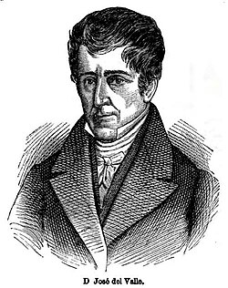
¿Quién fue?: Nacido en Choluteca, fue un brillante político, abogado, filósofo y periodista. Es conocido como el "Cerebro Gris de Centroamérica" por su vasto intelecto y su profunda formación académica en la Ilustración.
Aporte Histórico: Es el redactor del Acta de Independencia de Centroamérica (firmada el 15 de septiembre de 1821). Su pluma y pensamiento moderado buscaron una transición ordenada hacia la vida independiente, abogando siempre por el respeto a la ley, la educación y el desarrollo económico basado en la ciencia y el comercio.
2. José Trinidad Cabañas
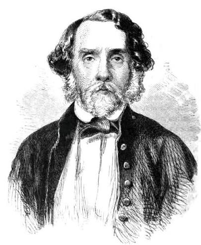
¿Quién fue?: Militar y político hondureño, considerado uno de los hombres más honrados, íntegros y valientes de la historia centroamericana.Fue fiel seguidor de los ideales unionistas de Francisco Morazán.
Aporte Histórico: Como Presidente de Honduras (1852-1855), defendió con firmeza la soberanía nacional frente a las invasiones filibusteras.Destacó por su incorruptibilidad: al dejar la presidencia, rechazó privilegios y volvió a las labores humildes para ganarse la vida, convirtiéndose en un símbolo moral de honestidad pública.
3. José Trinidad Reyes
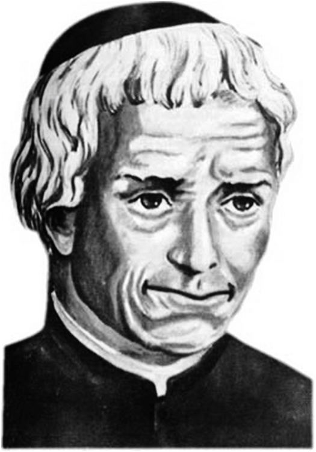
¿Quién fue?: Sacerdote, educador, músico, poeta y prócer cultural. Es una de las mentes más prolíficas de la Centroamérica del siglo XIX y un defensor incansable de la educación popular.
Aporte Histórico: Fundó la Sociedad del Genio Emprendedor y del Buen Gusto, que posteriormente se convertiría en la Universidad Nacional Autónoma de Honduras(UNAH) en 1847. Además, es reconocido por escribir las "Pastorelas", primeras expresiones de teatro académico en Honduras, y por usar la educación como herramienta de emancipación intelectual.
4.Lempira
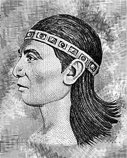
¿Quién fue?: Señor de los caciques del pueblo lenca y máximo Héroe Nacional de resistencia indígena durante la conquista española en el siglo XVI.
Aporte Histórico: Laudablemente organizó una confederación de tribus (con más de 30,000 guerreros) para hacer frente a las fuerzas conquistadoras al mando de Alonso de Cáceres en la región de Cerquín. Su lucha representa el valor, la dignidad y el rechazo a la opresión extranjera, dando nombre además a la moneda oficial de Honduras.
Proceres Patrios de Honduras
1. Lencas
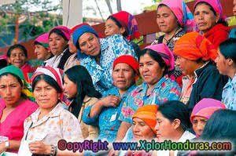
Es el grupo indígena más numeroso de Honduras, ubicado principalmente en la zona montañosa del occidente (Intibucá, Lempira y La Paz). Destacan por su ancestral rito del Guancasco, sus coloridos tejidos artesanales y su alfarería de barro negro.
2.Garifunas
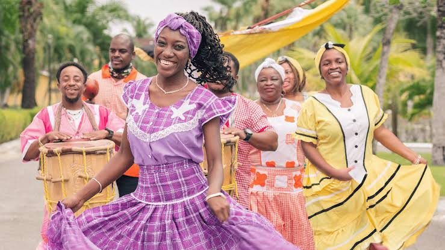
Pueblo afrodescendiente asentado a lo largo de la costa caribeña e islas. Su lengua, música y danza tradicional (como la Punta) fueron declaradas Patrimonio Inmaterial de la Humanidad por la UNESCO.
3.Misquitos

Habitan en la remota región de La Mosquitia (Gracias a Dios). Su economía se basa en la pesca y agricultura de subsistencia, manteniendo una cultura fuertemente ligada a los ríos, lagunas y bosques tropicales.
3.Tolupanes
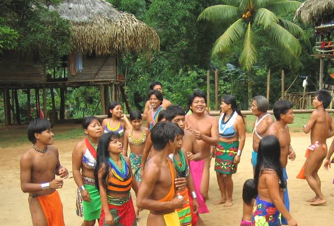
Localizados principalmente en el departamento de Yoro y en la reserva de La Montaña de la Flor (Francisco Morazán). Organizados en tribus, conservan su lengua ancestral (tol) y un estilo de vida integrado a la montaña.
3.Maya-Chortis
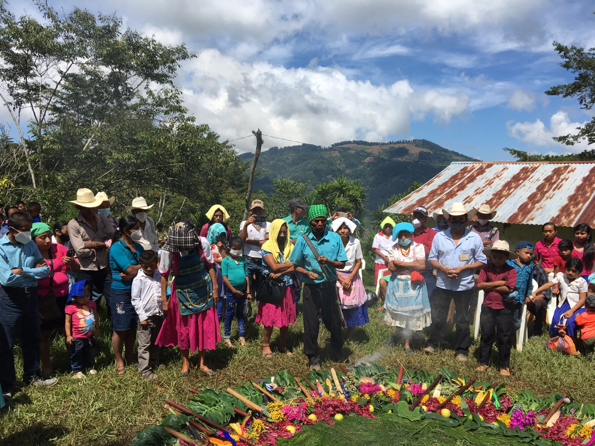
Descendientes directos de la civilización maya, asentados en los departamentos de Copán y Ocotepeque. Mantienen vivas sus ceremonias agrícolas de petición de lluvia y sus saberes ancestrales sobre el cultivo del maíz y cacao.
| Platillo | Imagen | Descripcion |
|---|---|---|
| Baleadas Tradicionales | 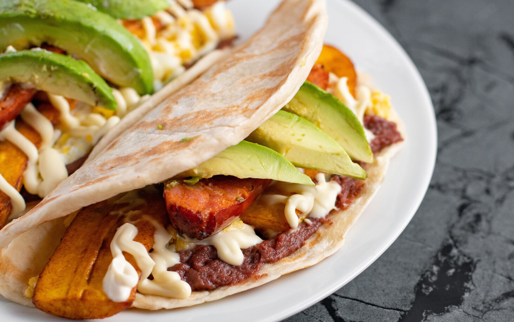 |
Un icónico manjar de la costa caribeña preparado con caracol tierno cocinado en una base de leche de coco, plátano verde, guineo y yuca, aromatizado con culantro y especias locales. |
| Sopa de Caracol | 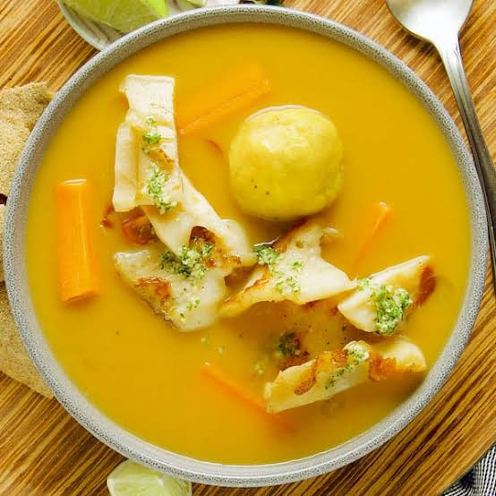 |
Tortilla de harina de trigo doblada por la mitad, rellenada con frijoles fritos refritos, mantequilla cremosa y queso seco rallado. Es el platillo insignia de la gastronomía urbana y popular de Honduras. |
| Tikin Xik garífuna | 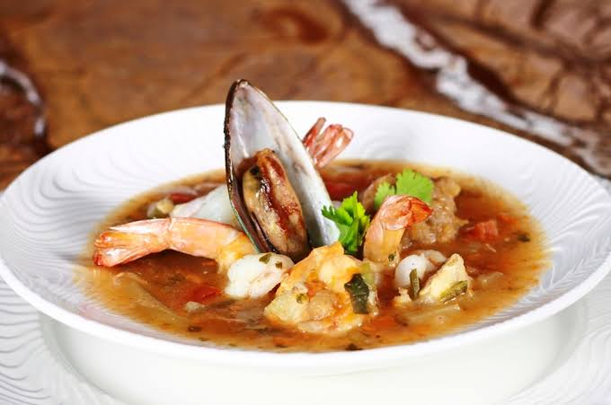 |
Plato tradicional de la cultura afrodescendiente Garífuna a base de pescado fresco o mariscos, cocinado en un espeso y sabroso caldo sazonado con achiote, hierbas locales y leche de coco. |
| Atol de Elote | 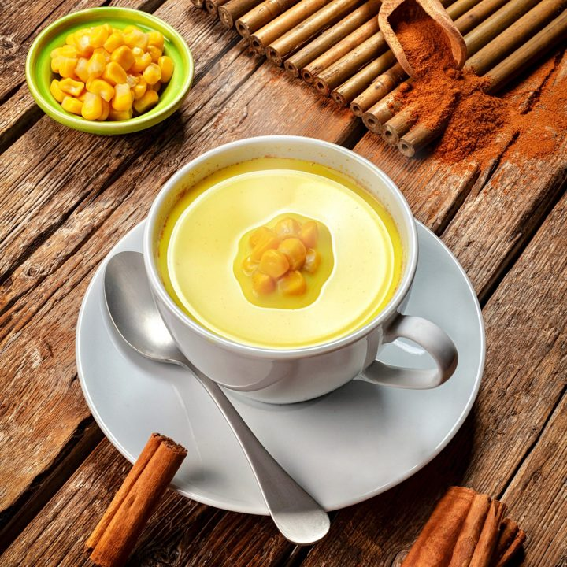 |
Bebida ancestral y reconfortante elaborada a base de maíz tierno molido, leche, canela y azúcar, servida bien caliente. Representa la herencia agrícola del maíz en los pueblos del interior. |
| Cafe de origen hondureño | 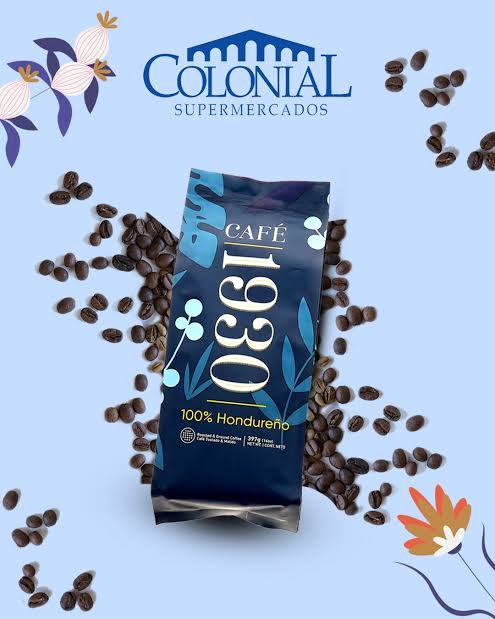 |
Café de especialidad cultivado a más de 1,200 metros sobre el nivel del mar en regiones como Marcala. Destaca por sus notas aromáticas a frutas, acidez brillante y la distinción de Denominación de Origen. |
| Gastronomia hondureña |